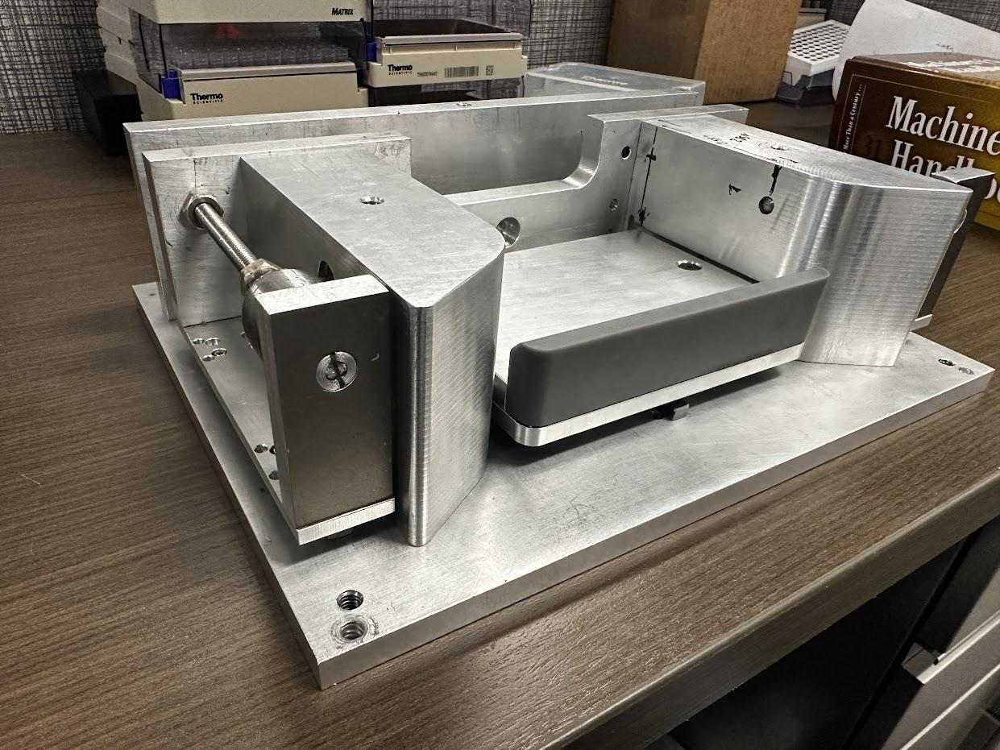
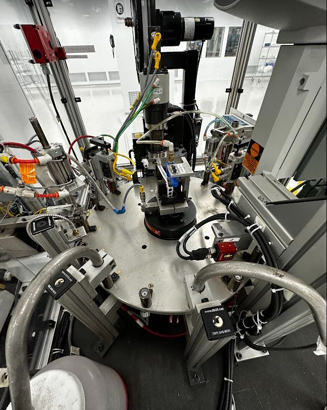
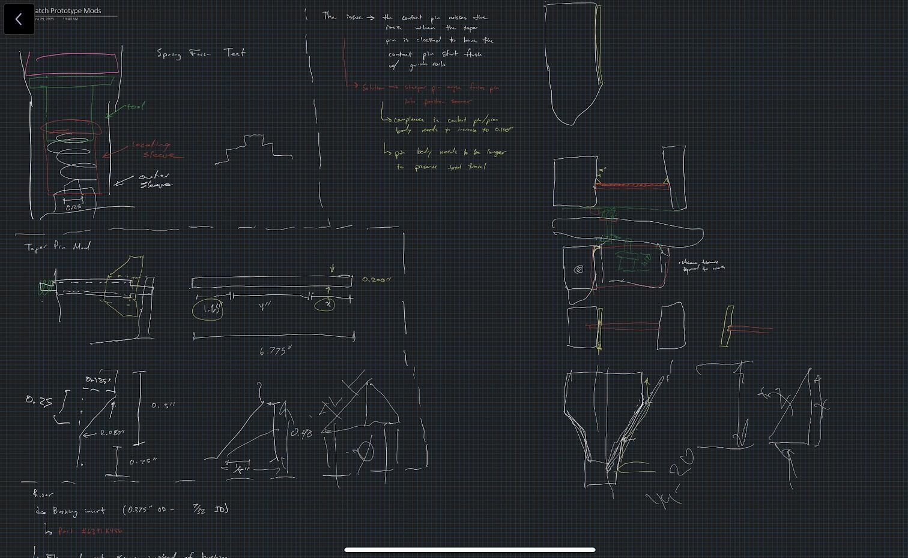
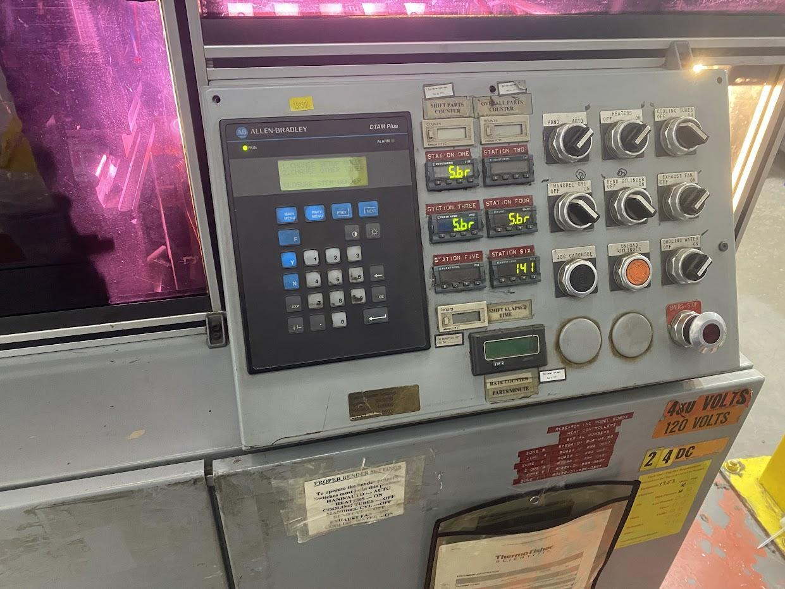
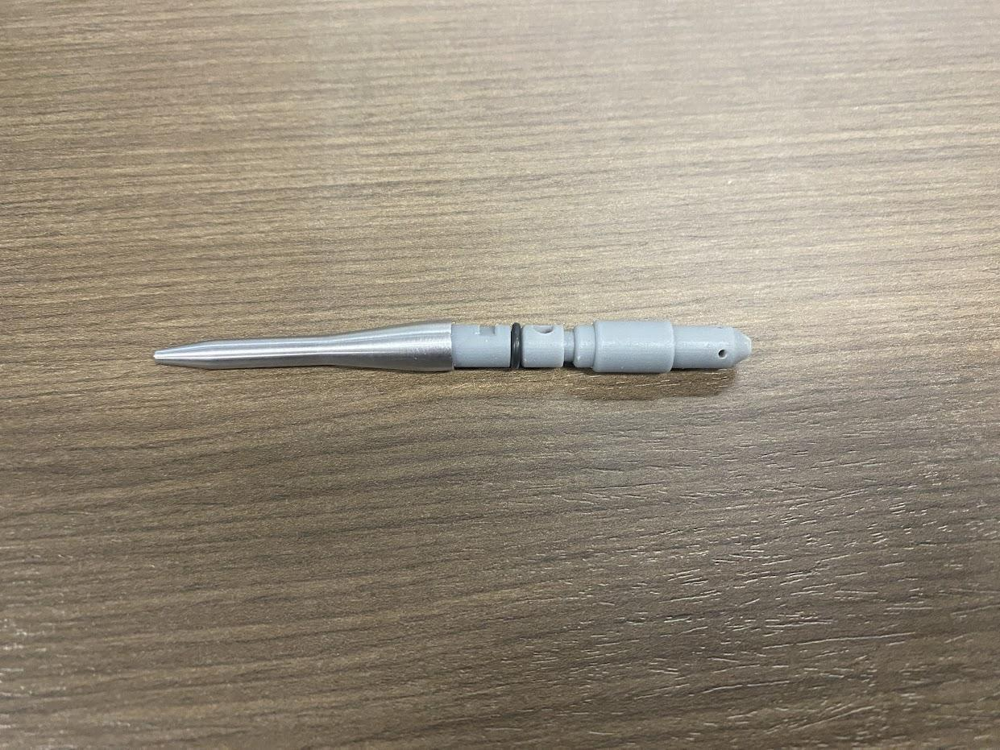
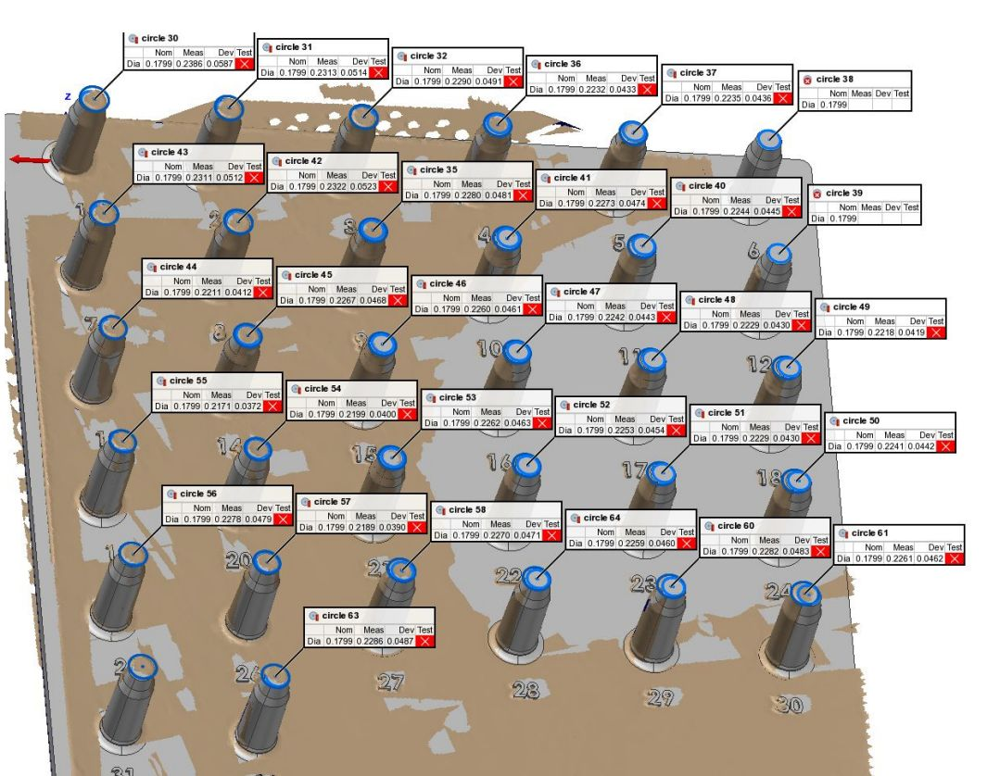
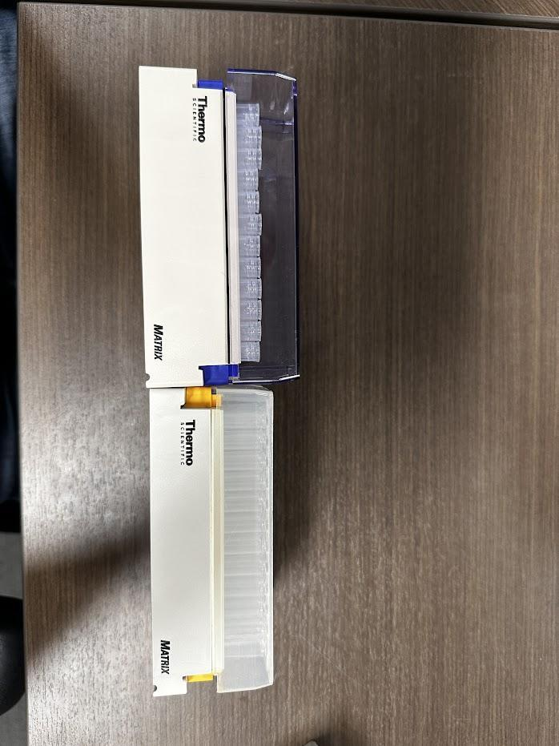
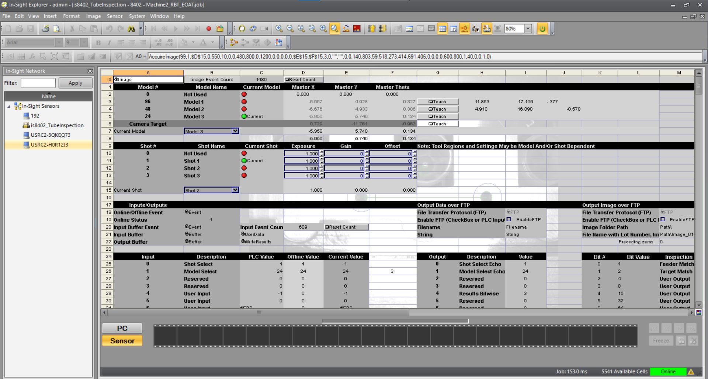

Two 8-month manufacturing engineering rotations on production lines for laboratory consumables. Owned ten projects spanning ergonomic safety machines, robot controls integration, ultrasonic weld process development, CMM programs, and full machine redesigns.
Higher complexity - controls integration, CMM/3D scanner programs, machine redesigns.
Problem: Operators manually toggled side latches on tube racks dozens of times per shift. Non-ergonomic motion caused fatigue - reported as a Health & Safety issue.
Solution: A bench-top tool that significantly reduces unlatching force, runs one-handed (operator never releases the rack), handles two rack heights in the same fixture. Mechanically driven by a cam-follower that converts a push motion into lateral latch actuation.
V1 -> V2: The original cam showed significant wear at the main contact surface. Diagnosed failure mode, replaced with a roller bearing and simplified cam profile, beefed up thin walls, added draft angle at the part entry for wider operator margin, added two linear rails for stability - all while improving manufacturability and reducing cost.


Problem: Dispensing jug stems were made externally by Scott Industries. Bringing the process in-house required a safe, repeatable cutting and reaming operation.
Solution: Self-contained station with ergonomic table, swing-in powered cutting and reaming tools, storage shelf, and caster wheels. Four-step process: (1) swing cutter into work area, (2) feed tube to length and cut, (3) load into staging area and clamp, (4) activate drill and push to ream spout.


Stations redesigned: 3 & 6 (orientation + gasket check), 5 (gasket seating), 8 (post-weld tamp), plus the part nests.
Orientation Check: Replaced a shaft-collar + proximity switch system with an LVDT - easier to teach, reduced complexity.
Gasket Seating - 5 iterations: Designed and tested five tamping tool iterations. Each incrementally improved seating. Root-cause analysis ultimately revealed the primary issue was concentricity and sharpness of the cutter - pivoted away from this approach. The iteration history is the evidence of a real engineering process, not a shortcoming.
Secondary Tamp: Post-weld, gasket material caught on closure threads caused aesthetic failures. Designed a secondary post-weld tamp - adjustable along three axes, stainless steel only contacts the part. Successfully reduced high-gasket rate.
Nests: Redesigned to support closure underside for weld performance, with sliding action for consistent station-to-station height repeatability.
Controls discovery: Machine continued running hundreds of cycles after weld horn shut off. Traced via Part vs Force / Part vs Energy plots: weld horn over-traveled onto the nest (tooling-on-tooling), force spiked past feedback limits, horn shut off but machine kept running because the register wasn't catching it. Solution: enabled lower feedback limits in additional settings menu, verified PLC logic for welder output to machine register.

Problem: Particulate on vials and thread stringing on closures were causing production stoppages.
DOE: Varied capping parameters (linear speed, rotational speed, abort timer, positions, torques) to isolate what drove stringing. Discovered the LINMOT capper was running at the wrong linear-to-rotational ratio - rotation not matching the closure thread pitch.
Calculation: Derived the correct rotational and linear speeds to match the pitch from the closure drawing. Due to machine speed limits, the full ideal rate couldn't be achieved - but updated settings were ~18% closer to ideal and produced a substantial decline in stringing and capping failures. Trial 1: ~17% bad parts. Trial 3 (optimized): ~1.2%.
Particulate air knife: Designed and printed a 3D air knife to blow particulate into a reject chute. The design didn't succeed - particulate reduced after cleaning and LINMOT optimization. Productive failure: documented the approach and moved on.
Problem: Molded vial defects (flash, runout) were reaching automation lines. Needed an in-process inspection method to catch them earlier.
Training: 12+ hours with an OGP applications engineer. Characterized machine capabilities by scanning a drill bit and stitching a full point cloud.
Concept 1: Two-stage fixture - mandrel for external features, counter-bore for internal. Captured both; workflow required two scans and stitching.
Concept 2: Vertical fixture for single-scan capture. Promising geometry, but inconsistent scanning spray application and part handling introduced accuracy variability.
Concept 3: Chain-link spray station with interchangeable mandrels carries parts through a linear spray path (no handling -> uniform coating), then mounts on a circular stage within the scanner's field of view.

Problem: T225 flasks were failing burst tests. Investigation pointed to misalignment between energy director centerlines and lid groove centerlines. Needed a measurement program.
CMM program: Developed with Daryl (Quality Engineer) to measure centerlines and determine part fitment. Program failed to pass a Type 2 Gauge R&R - repeatability degraded progressively, up to 0.020" total variation measuring the same points on the same part.
Investigation: Designed multiple staging fixtures referencing different datum surfaces (part feet vs. internal cavity) to isolate the source. Data analysis revealed variability came from the CMM alignment process itself, not the staging.
Resolution: Switched to SmartScope (optical comparator with user-input centerlines), which removed alignment-process variability entirely.

Project: Condensed Line 4 footprint to reduce operator travel between stations. After the move, the tubeloader vision system's bowl position fell outside its previously-taught reference threshold. Re-taught camera reference points and LVDT measurement positions. Tubeloader robot pick positions also needed re-teaching after its local coordinate system was adjusted by the vision offsets - re-taught all positions across three bowl sizes (96, 48, 24) and updated configuration code.

First co-op - SolidWorks, process development, ergonomic safety design, GD&T fundamentals.
Problem: Original process had operators eyeballing filter placement during ultrasonic welding of lid + closure + membrane. Not repeatable, not auditable.
New process: Worked with Rochester Automation (integrator) to fabricate a welder frame and develop the controls system. Designed a hand-held wand vacuum holding the lid and filter, a part nest, and the full process flowchart - every automation cue documented from wand vacuum confirmation through light curtain clear and weld activation.
Validation: Conducted a leak test DOE leading to a filter OD design change. Ran a 50+ part worst-case weld parameter study (tracking power, energy, force). Designed a force test staging fixture with Brandon (R&D co-op). Outcome: 98% yield on the new process with increased throughput.
Problem: Current inspection used a vision system that didn't emulate the actual function of the part - it could pass parts that would functionally fail.
Solution: QA fixture using a calibrated mass and dial indicator that emulates the new machine inspection process. Mass has a grab handle so operators can raise and lower it onto the part nest in a repeatable motion. Preceded by tolerance stack-up analysis defining the critical distance constraints in the closure cross-section.